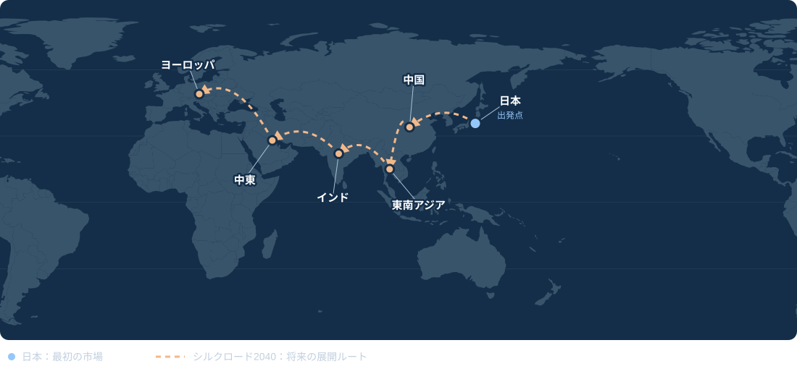

3か国での販売を目指す。
日本・ミャンマー・タイで活動しています。商品に合った市場と販売方法を、一緒に検討します。
中国・ASEANのメーカー様へ
日本・ミャンマー・タイに拠点を持ち、各市場に向けた商品を仕入れます。まずは有償サンプルから。商品と条件が合えば小ロットでのテスト発注に合意し、実際の顧客需要をもとに継続発注を目指します。

メーカーの皆様へ
ひとつの窓口から、バンコク・ヤンゴン・東京・札幌の4拠点へ。
日本・ミャンマー・タイで活動しています。商品に合った市場と販売方法を、一緒に検討します。
担当の山田は機械工学修士。株式会社デンソーとDENSO Manufacturing Michigan, Inc.で、米国駐在1年を含む5年間、生産技術に従事しました。
サンプルや小ロットから始めます。クラウドファンディングも活用して顧客の反応を確かめ、結果に応じて投資を広げます。
商品の例
アルミブランケットや簡易トイレなど、メーカーと商談する商品の例です。写真は販売実績を示すものではありません。


取引の始め方
基本となるのは、メーカーから商品を買い取るモデルです。価格・数量・役割分担に双方が合意したうえで、個別に発注します。
対象商品を一緒に選び、サンプル代と配送条件に合意します。その後、当社がサンプルを購入し、仕様・品質・市場との相性を確認します。
サンプルと条件が合えば、小ロットの購入や日本でのクラウドファンディング検証について合意します。開始前に予算・役割・達成基準を確認します。
顧客の声と販売結果をもとに、改善や追加発注を判断します。事業としての見通しが立った段階で、販売地域や独占条件も相談します。
別の取り組み方も相談できます。有償の販売支援や、双方が費用を分担して段階的に進めるテストマーケティングにも対応を検討します。業務範囲・費用・達成目標は別途合意します。
まずはWeChatかメールで、商品写真またはカタログのリンクを1つお送りください。そこからサンプル条件やオンライン面談の日程を決めましょう。山田に連絡する →
01 / 事業を支える経験
2012年に国立大学院を修了し、機械工学修士を取得。その後、株式会社デンソーで生産技術に従事しました。
DENSO Manufacturing Michigan, Inc.に1年間駐在した後、退職。日本とアメリカで計5年間、生産技術に携わりました。
2017年にミャンマーへ移住し、ヤンゴンでBKUを共同創業。大きな変化の中でも事業を築き、継続してきました。
タイへ移住し、貿易事業を開始。バンコクを拠点に、アジア殖産株式会社を創業しました。


02 / 長期構想
最初の一歩は日本から長い視野で、
一歩ずつ、着実に。
日本・中国・東南アジア・インド・中東・ヨーロッパのメーカーと市場をつなぐ長期構想です。最初の一歩は日本から始めます。

03 / 社会貢献
ボランティアや地域支援を重視するAsia Shokusan Inc.も設立しました。
以前から売上の一部を寄付し、ミャンマーの貧困地域やベトナムの孤児院などを支援してきました。


商品の話をしましょう。
まずは商品写真かカタログのリンクをお送りください。卸価格・最低発注数量・納期・認証を一緒に確認し、サンプル条件や面談日程を決めましょう。
山田侑平LinkedInでつながる